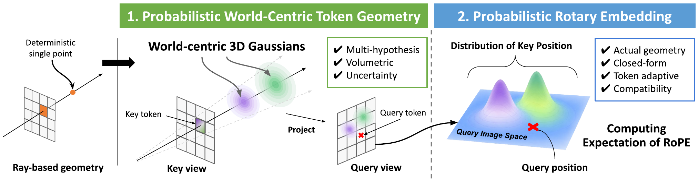
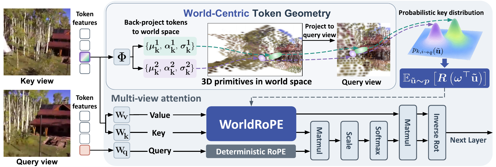

WorldRoPE
Probabilistic World-Centric Rotary Embedding for Multi-View Attention
1ECE · 2IPAI, Seoul National University
Under Review
Multi-view attention,
grounded in 3D.
WorldRoPE models uncertain patch positions in a shared 3D world. Its expected rotary embedding guides cross-view attention in multi-view Transformers, layer by layer.
Abstract
Rotary Positional Embedding (RoPE) is widely used to encode relative positions in Transformers. In multi-view settings, however, patch coordinates are defined independently in each image: the same 3D point can therefore have different coordinates across views, making them insufficient for establishing cross-view correspondences. We introduce WorldRoPE, a probabilistic world-centric RoPE for multi-view attention. At each layer, WorldRoPE back-projects each patch token into a set of volumetric Gaussian primitives in a shared world frame. These primitives represent multiple plausible 3D supports for a token, jointly capturing alternative depth hypotheses, depth uncertainty, and the finite spatial extent of its patch frustum. When a key token’s support is projected into a query view, it induces a distribution over where that key may appear in the query image. WorldRoPE integrates the rotary operator over this distribution in closed form, combining rotations at the projected primitive centers according to their mixture weights with covariance-dependent attenuation. This makes attention less sensitive to uncertain key locations in the query view, without rasterizing or warping token features. The formulation reduces to deterministic RoPE when the support collapses to a point. Across layers, the predicted geometry guides cross-view attention, while the updated features refine the geometry used at the next layer. Experiments on novel view synthesis, depth estimation, and 3D geometry reconstruction demonstrate the effectiveness of WorldRoPE for multi-view Transformers.
Explore World-Space Gaussian Supports
Choose a scene and follow its Gaussian supports through the Transformer layers. Drag the 3D view to explore, or look through the key and query cameras.
World-space Gaussian supports
Loading captured model predictions…
Six actual Transformer layers · 4 Gaussian components per key patch · RGB used for visualization
World-centric token geometry
A patch covers a viewing frustum, often crossing more than one depth. A mixture of volumetric Gaussians can retain those alternative surfaces, their uncertainty, and the finite footprint of the patch.

WorldRoPE in attention
At each Transformer layer, token features predict 3D Gaussian support for key patches. Projection into the query view gives a closed-form expected rotary operator for cross-view attention. The updated features inform geometry prediction in the next layer.

Novel view synthesis
With LVSM, WorldRoPE improves PSNR, SSIM, and LPIPS on RE10K and Objaverse.

| Method | RE10K | Objaverse | ||||
|---|---|---|---|---|---|---|
| PSNR ↑ | SSIM ↑ | LPIPS ↓ | PSNR ↑ | SSIM ↑ | LPIPS ↓ | |
| Plücker ray | 24.62 | 0.790 | 0.108 | 15.15 | 0.838 | 0.355 |
| GTA | 25.05 | 0.799 | 0.102 | 22.22 | 0.892 | 0.123 |
| PRoPE | 25.44 | 0.811 | 0.095 | 22.41 | 0.894 | 0.117 |
| RayRoPE | 26.17 | 0.833 | 0.081 | 22.25 | 0.892 | 0.121 |
| URoPE | 26.26 | 0.834 | 0.078 | 21.99 | 0.890 | 0.128 |
| WorldRoPE | 26.75 | 0.846 | 0.073 | 22.52 | 0.896 | 0.113 |
Table 2 in the paper. PSNR is in dB.
Beyond novel view synthesis
We also evaluate WorldRoPE with UniMatch for stereo depth and VGGT for feed-forward 3D reconstruction.
Stereo depth estimation
| Method | Scenes11 RMSE ↓ | SUN3D RMSE ↓ | RGBD RMSE ↓ | ScanNet++ AbsRel ↓ | ScanNet++ RMSE ↓ |
|---|---|---|---|---|---|
| RayRoPE | 0.743 | 0.370 | 0.677 | 0.257 | 0.426 |
| URoPE | 0.686 | 0.374 | 0.637 | 0.234 | 0.398 |
| WorldRoPE | 0.661 | 0.356 | 0.630 | 0.224 | 0.386 |
Feed-forward 3D reconstruction
| Method | Depth AbsRel ↓ | Norm. RMSE ↓ | Camera points AbsRel ↓ | Rotation error ↓ |
|---|---|---|---|---|
| RayRoPE | 0.0579 | 0.0624 | 0.0575 | 1.04 |
| URoPE | 0.0581 | 0.0626 | 0.0576 | 1.02 |
| WorldRoPE | 0.0567 | 0.0619 | 0.0565 | 0.98 |
For derivations, ablations, and implementation details, read the full paper on arXiv ↗.